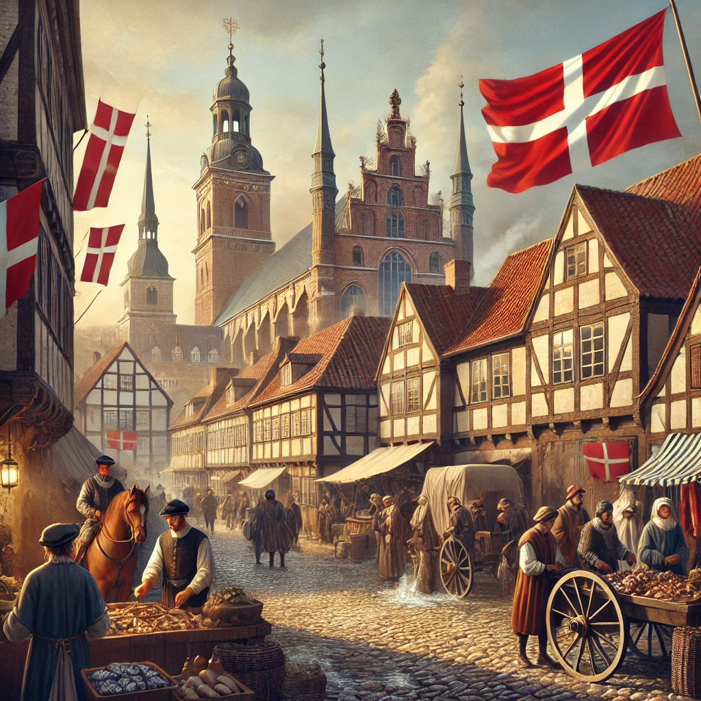

Renässansens inverkan på Malmö:
Under Renässansen, som sträckte sig från slutet av 1300-talet till början av 1600-talet, genomgick Europa stora förändringar inom konst, kultur, vetenskap och politik. Malmö, som vid denna tid var en del av det danska kungariket, påverkades av den kulturella och intellektuella uppblomstringen som präglade denna tid. Renässansen förde med sig nya idéer om människan, vetenskapen och världen, och denna intellektuella rörelse började också sprida sig till de nordiska länderna.
Malmö var vid denna tid en viktig handelsstad, och stadens ekonomi blomstrade under renässansen. Malmö låg strategiskt vid Öresund, vilket gjorde staden till en knutpunkt för handel mellan Norden och Europa. Stadens hamn var välbesökt av handelsfartyg från både engelska, holländska och tyska handelsstäder, vilket ökade stadens rikedom och inflytande. Under renässansen började Malmö också att utveckla en mer stadslik struktur med en växande befolkning och fler byggnader för handel och administration.
Malmö under den tidiga moderna tiden (1500–1600-talet):
Under den tidiga moderna tiden, särskilt på 1500-talet, var Malmö en del av den danska monarkin. Staden var en central punkt i Öresundshandeln, och i takt med att handel och sjöfart växte, utvecklades också stadens infrastruktur och samhällsliv. Renässansens påverkan märktes även inom arkitektur och stadsplanering. Den tidigare medeltida stadsstrukturen började omformas, och Malmö började bygga fler offentliga och privata byggnader med en mer renässansinspirerad arkitektur, ofta med influenser från Italien och andra delar av Europa.
Reformationen och politiska förändringar:
En av de mest betydelsefulla händelserna under denna tid var reformationen, som började på 1500-talet. Reformationen, som leddes av Martin Luther, förändrade den religiösa kartan i Europa och hade stor påverkan på Skandinavien. När Danmark och Sverige genomgick reformationen, övergick majoriteten av befolkningen till den lutherska protestantismen och bröt med den katolska kyrkan. Malmö, som låg i Danmark, blev därmed en del av den protestantiska omvandlingen.
För Malmö innebar reformationen förändringar inom kyrka och samhälle. Staden fick nya protestantiska kyrkor, och kloster samt katolska byggnader togs bort eller omvandlades. Den religiösa förändringen hade också långsiktiga effekter på stadens kultur och samhällsliv.
Malmö under 1600-talet: På 1600-talet började den tidiga moderna tiden ta mer form, och Malmö såg en fortsatt utveckling både ekonomiskt och socialt. Den danska monarkin stärktes, och Malmö fortsatte att vara en viktig handelsstad i Öresund, där tullen på Öresund, en av de största inkomstkällorna för Danmark, hade stor betydelse. Tullarna på sundet var en viktig ekonomisk motor för både Malmö och resten av Danmark.
Under denna tid stärktes stadens fästning och försvar, särskilt efter att Danmark och Sverige varit i konflikt under början av 1600-talet. Malmö blev en strategisk stad både militärt och ekonomiskt, och dess befästningar blev förstärkta för att skydda mot hot från grannländerna.
Kulturell och social utveckling:
Kulturellt och socialt var Malmö under denna tid fortfarande en relativt liten stad, men med en växande befolkning och ökande handelsverksamhet började stadens karaktär förändras. Handel och hantverk var fortfarande stadens ryggrad, men den växande medelklassen, som hade blivit rik på handel, började att efterfråga bättre bostäder och offentliga byggnader. Stadens arkitektur började få mer renässansartade inslag och blev mer varierad med offentliga byggnader, såsom rådhus och kyrkor, som speglade tidens stilideal.
Den renässansartade kulturella utvecklingen innebar också att Malmö började få fler kulturella evenemang och kontakt med intellektuella strömningar från kontinenten. Författare och konstnärer började få mer uppmärksamhet, även om Malmö under denna tid inte var en kulturmetropol som många andra europeiska städer.
Sammanfattning:
Under Renässansens och den tidiga moderna tiden växte Malmö fram som en viktig handelsstad i Öresundshandeln, och stadens arkitektur och samhällsliv började reflektera den kulturella förändring som präglade Europa under denna period. Reformationen hade också en stor inverkan på Malmö, då staden övergick till protestantismen och förändrade sin religiösa och kulturella landskap. På 1600-talet blev Malmö än mer strategiskt viktig för den danska monarkin, både ekonomiskt och militärt, och staden började utvecklas till en mer modern och växande stad.